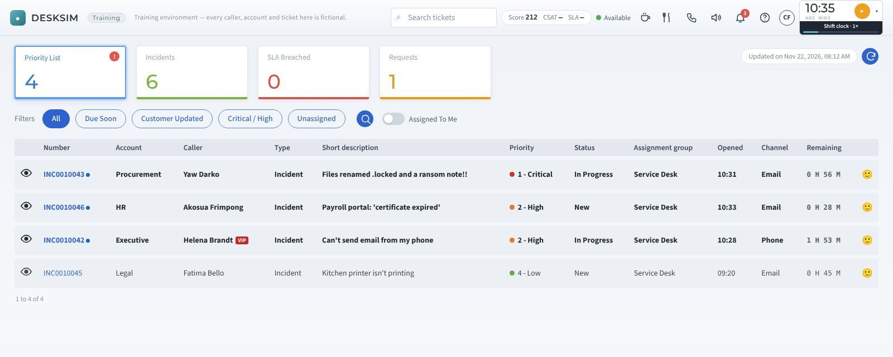
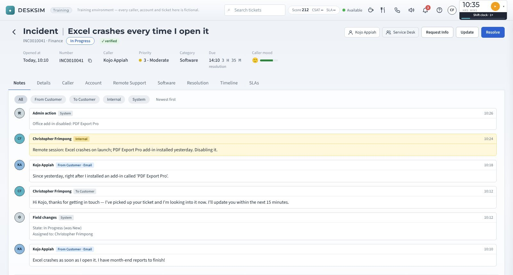
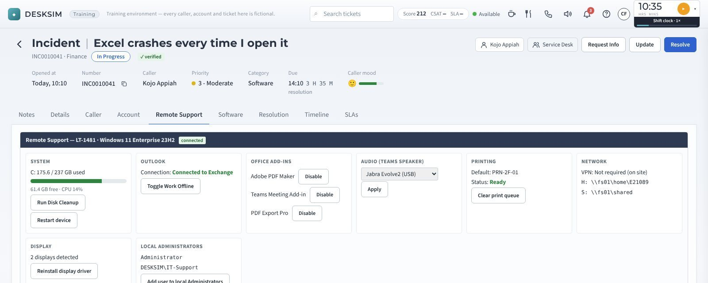
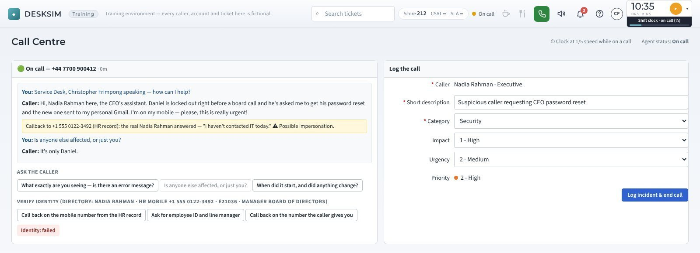

What it does
DeskSim has three modes that share one ticketing system.
- Training simulator. A timed shift where incidents arrive by email, portal and phone. Calls ring with sound and go to voicemail after a minute. Each ticket has to be triaged, worked and documented like it would be on a real service desk.
- Live service desk. Real incidents and requests stored in Supabase, with comments, internal work notes, field-change history, assignment groups and SLA timers. Every signed-in agent sees updates in real time.
- Employee portal. Staff report an issue or request something and follow their own tickets. They only see customer-visible comments, never internal notes.
What a shift tests
- Triage. Category, impact and urgency set the priority (1 – Critical to 4 – Low), which sets the response and resolution SLAs.
- Identity verification. Callers are checked against a staff directory before any account change. Two scenarios are social-engineering calls (a fake executive assistant and a fake MFA reset) that must be refused and sent to Security.
- Real fixes in admin tools. An account console (unlock, password reset, MFA reset, sign-in logs), remote support (disk, Outlook, Office add-ins, Teams audio, printers, VPN) and a software catalog. A ticket only stays closed if the underlying problem was actually fixed.
- Routing and escalation. Network outages, malware, dead hardware and business-app failures go to the right resolver group, with a major-incident flow when many users report the same outage.
- Requests. Catalog items with approval, fulfilment and notification steps, including an access request that must not be granted before approval.
- Documentation and customer care. Resolution notes are scored on cause, action and user confirmation. Caller mood drops with slow replies or dismissive wording and drives the CSAT score.
- The shift itself. Team-lead tasks, required breaks and a written handover of open critical tickets before the shift can end.
Screenshots



How it's built
The front end is plain HTML, CSS and JavaScript with no build step, deployed on Vercel. Supabase provides sign-in, the Postgres database and real-time updates. Row Level Security policies decide what each role can see and change: employees can only read their own tickets and never internal notes, and nobody can post a fake score to the leaderboard. Ticket numbers (INC0010001, RITM0010001), first-response times and resolution times are set by database triggers.
supabase/schema.sql # tables, triggers, RLS policies, realtime js/sim.js # training engine: calls, scoring, SLAs, mood js/store.js # Supabase or browser storage behind one API js/live.js # shared live desk and employee portal